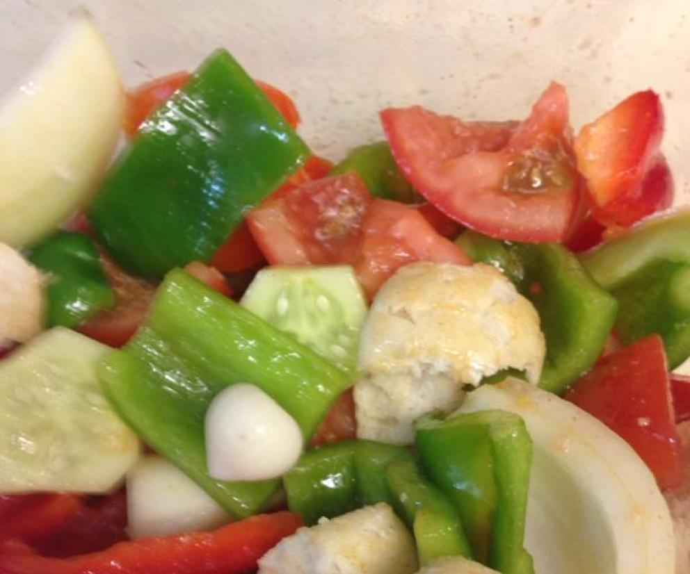
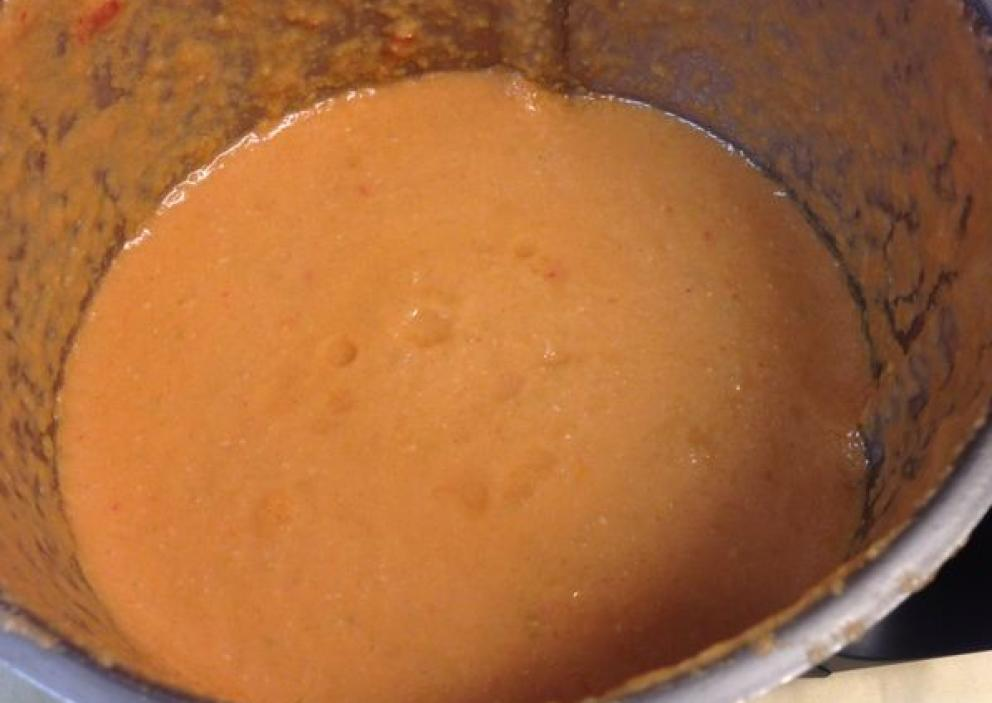
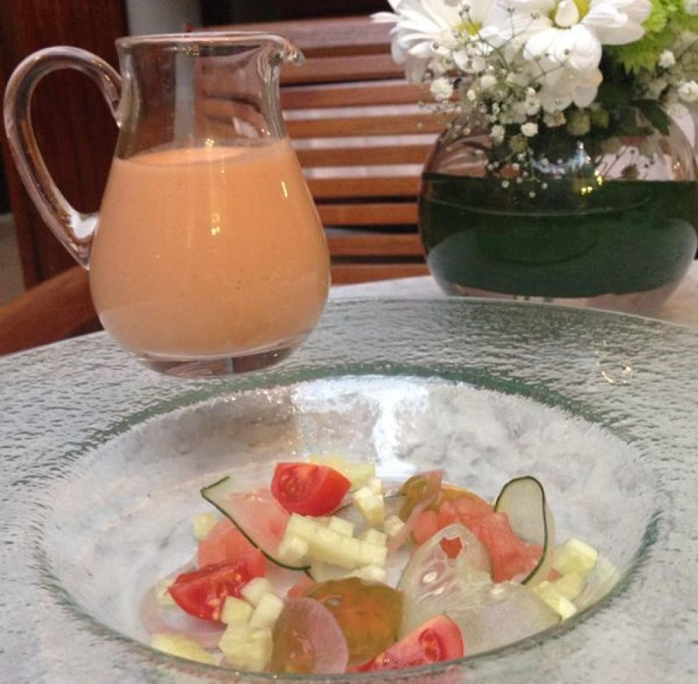

Preparando Gazpacho
Las verduras
Lava bien todas las verduras y quita el germen del ajo para que repita menos. Córtalas en trozos medianos y colócalas en un bol grande. Añade la mitad del aceite, el vinagre, la sal y un poco de agua.
Trituramos
Saca las verduras de la nevera y tritura las verduras muy finas con ayuda de un rallador (o a cuchillo). Pasa la mezcla por un chino. Tras esto, emulsiona la sopa con la batidora como si fuera una mayonesa, vertiendo el resto del aceite a medida que bates. Prueba la mezcla y rectifica el punto de sal y vinagre al gusto.
Servimos
Sirve el gazpacho acompañado de una guarnición compuesta por las mismas verduras que lo componen.
